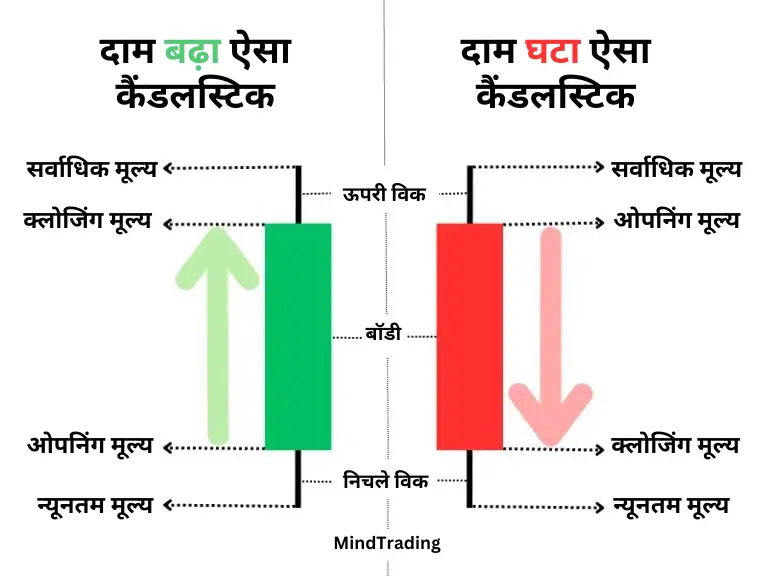
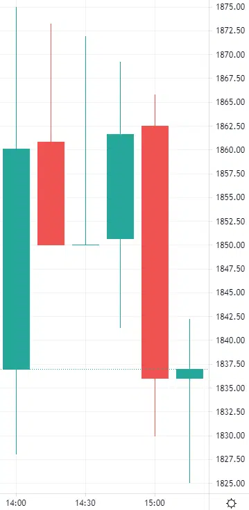

कैंडलस्टिक क्या है?
एक कैंडलस्टिक चार्ट कई कैंडलस्टिक से बनाया गया होता है। किसी भी समय फ्रेम में शेयर की कीमत के चार स्तर -
खुलने की कीमत (Opening Price), बंद होने की कीमत (Closing Price), अधिकतम कीमत (Highest Price),
और न्यूनतम कीमत (Lowest Price) - एक कैंडलस्टिक के माध्यम से प्रस्तुत की जाती हैं।

चार स्तरों को ठीक से समझाने के लिए प्रत्येक कैंडलस्टिक में दो भाग होते हैं। जैसा कि,
मध्य मोटा शरीर:
यह सबसे महत्वपूर्ण हिस्सा होता है। यह निर्दिष्ट समय में खोलने और बंद करने की कीमत के अंतर को दर्शाता है।
कीमत जो बढ़ गई है या बैलिश कैंडलस्टिक का निचला हिस्सा खोलता है और ऊपरी हिस्सा बंद करता है और कीमत कम हो
गई है या बियरिश कैंडलस्टिक का विपरीत होता है, अर्थात ऊपरी हिस्सा खोलता है और निचला हिस्सा बंद करता है।
बैलिश कैंडलस्टिक की बॉडी का रंग सामान्य रूप से हरा (कभी कभी काला या गहरा) होता है और बियरिश
कैंडलस्टिक की बॉडी का रंग सामान्य रूप से लाल (कभी कभी सफेद या फीका) होता है।
शैडो या क्लिक :
बॉडी के ऊपर और नीचे दो शैडो या विक होते हैं, जिनके दोनों छोर समय के अनुसार न्यूनतम और अधिकतम कीमत को दर्शाते हैं।
लेकिन, कीमत के परिवर्तन के प्रकार के अनुसार, ये क्लिक्स हमेशा नहीं हो सकते हैं।
उदाहरण:
नीचे दी गई छवि आज की तारीख (25/10/24) का 15 मिनट का समय फ्रेम है,
जो Adani Enterprises के दो से तीन छोटे कैंडलस्टिक की छवि दिखाती है।

यहां पहले कैंडलस्टिक की अवधि 2:00 से 2:15 है। अर्थात यह 2:00:00 पर निर्माण शुरू हुआ और ऊपर नीचे होते हुए
यह पूरी तरह अलग हो गया या क्लोज हो गया 2:14:59 पर। इसके बॉडी का रंग हरा है, इसलिए इसका ओपेनिंग
मूल्य बताता है इसके बॉडी के निचले हिस्से को, अर्थात 1837 रुपये और क्लोजींग मूल्य बताता है उच्चत अर्थात 1860.10 रुपये।
निचले विक का स्तर 1828 रुपये है। यानी इस पंद्रह मिनट के दौरान मूल्य कभी भी शायद ही इस न्यूनतम मूल्य पर एक बार गिरा था।
ठीक इसी तरह से, ऊपर विक का शीर्ष स्तर 1875 रुपये है, जो यह दर्शाता है कि इन्हीं समय के दौरान अधिकतम मूल्य कभी नहीं
कभी 1875 रुपये पर बढ़ गया था।
चित्र का पहला कैंडलस्टिक 1860.10 पर क्लोज होने के बाद 2:15 पर 1860.80 स्तर पर दूसरा कैंडलस्टिक निर्माण शुरू हुआ।
इसका रंग लाल है क्योंकि यह क्लोज huई ओपेनिंग मूल्य के नीचे 1850.10 रुपये पर।
इसकी एक और विशेष विशेषता यह है कि नीचे कोई विक नहीं है। क्योंकि इस मामले में क्लोजींग मूल्य और न्यूनतम मूल्य या लोअेस्ट मूल्य एक ही है।
तीसरे कैंडलस्टिक में फिर भी किसी प्रकार के बॉडी की उपस्थिति नहीं है। समय का पहाड़ है क्योंकि इस मामले में ओपेनिंग और क्लोजींग मूल्य समान हैं।
पिक्चर का बाकी विवरण मुझे लगता है कोरल दे रहा है इसकी जरूरत नहीं होती है क्योंकि मैं उम्मीद करता हूं कि यह अब तक स्पष्ट हो गयी होगी।